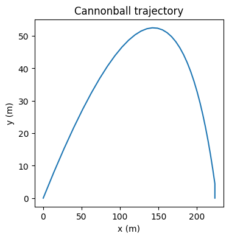
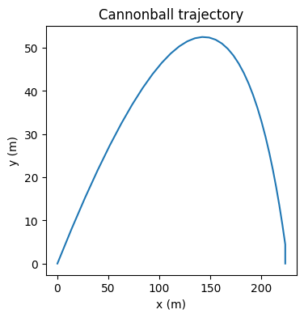

Workshop 2: Solutions#
import numpy as np
import matplotlib.pyplot as plt
Exercise 1#
The updated code is:
x = np.zeros(5)
x[0] = 10
print("x:", x)
for i in range(5):
x[i+1] = x[i] + 0.1*x[i]
print("x:", x)
x: [10. 0. 0. 0. 0.]
---------------------------------------------------------------------------
IndexError Traceback (most recent call last)
Cell In[2], line 7
4 print("x:", x)
6 for i in range(5):
----> 7 x[i+1] = x[i] + 0.1*x[i]
9 print("x:", x)
IndexError: index 5 is out of bounds for axis 0 with size 5
If we try and run this we see IndexError: index 5 is out of bounds for axis 0 with size 5.
When we increase the upper limit to \(5\) the final value that is passed through the for loop is i = 4.
Remember that arrays are indexed from \(0\), so x[n] will try to access the (n+1)th element of x.
So when i = 4 the line x[i+1] = x[i] + 0.1*x[i] looks for the element of x at index \(5\), which is the \(6\)th element of x.
But x only has \(5\) elements! So Python is warning us that we are trying to access an element of an array that does not exist - i.e. it is out of bounds.
Exercise 2#
First we need to extend the for loop from above. To get \(x_{16}\) we will need to calculate 17 terms of the sequence - remember that the first term is \(x_0\).
x = np.zeros(17)
x[0] = 10
for i in range(16):
x[i+1] = x[i] + 0.1*x[i]
print("x[16]:", x[16])
x[16]: 45.94972986357215
Exercise 3#
x = np.zeros(20)
x[0] = 10
# create array y and set initial value
y = np.zeros(20)
y[0] = 10
for i in range(19):
x[i+1] = x[i] - 0.5 * y[i]
# set value of y[i+1]
y[i+1] = y[i] + 0.4 * x[i]
plt.figure(figsize=(3,3))
plt.plot(x)
# plot y on the SAME graph
plt.plot(y)
[<matplotlib.lines.Line2D at 0x2b94b2465d0>]

Exercise 4#
\(I_0 = 1000\)
\(I_1 = I_0 - 0.1*I_0 = 1000 - 100 = 900\)
\(I_2 = I_1 - 0.1*I_1 = 900 - 90 = 810\)
\(I_3 = I_2 - 0.1*I_2 = 810 - 81 = 729\) and so on…
n_days = 100
I = np.zeros(n_days)
I[0] = 1000
for i in range(n_days - 1):
I[i+1] = I[i] - 0.1 * I[i]
plt.figure(figsize=(5,5))
plt.plot(I)
plt.xlabel("Time (days)")
plt.ylabel("Infected population")
Text(0, 0.5, 'Infected population')

Exercise 5#
# set up variables and arrays
n_days = 100
a = 0.1
b = 0.00005
S = np.zeros(n_days)
I = np.zeros(n_days)
# initialise the variables
S[0] = 20000
I[0] = 100
# implement equations
for i in range(n_days - 1):
S[i+1] = S[i] - (b * S[i] * I[i])
I[i+1] = I[i] + (b * S[i] * I[i]) - (a * I[i])
plt.figure(figsize=(5,5))
plt.plot(I)
plt.plot(S)
plt.xlabel("Time (days)")
plt.ylabel("Population")
Text(0, 0.5, 'Population')

Exercise 6#
By experimenting with values of \(b\), you should find that the epidemic disappears somewhere between 0.000005 and 0.000006. To see this you have to increase the value of n_days because the peak gets later as it gets lower.
# set up variables and arrays
n_days = 1000
a = 0.1
b = 0.000005
S = np.zeros(n_days)
I = np.zeros(n_days)
# initialise the variables
S[0] = 20000
I[0] = 100
# implement equations
for i in range(n_days - 1):
S[i+1] = S[i] - (b * S[i] * I[i])
I[i+1] = I[i] + (b * S[i] * I[i]) - (a * I[i])
plt.figure(figsize=(5,5))
plt.plot(I)
plt.plot(S)
plt.xlabel("Time (days)")
plt.ylabel("Population")
plt.title(b) # add title so we know what value we are currently looking at
Text(0.5, 1.0, '5e-06')

One way to plot multiple solutions on the same plot is to use a loop as below. Note that we have also added a legend.
# set up variables and arrays
for k in range(4):
b = 0.000001 * k + 0.000005
n_days = 1000
a = 0.1
S = np.zeros(n_days)
I = np.zeros(n_days)
# initialise the variables
S[0] = 20000
I[0] = 100
# implement equations
for i in range(n_days - 1):
S[i+1] = S[i] - (b * S[i] * I[i])
I[i+1] = I[i] + (b * S[i] * I[i]) - (a * I[i])
plt.plot(I, label = b)
plt.xlabel("Time (days)")
plt.ylabel("Population")
plt.legend()
<matplotlib.legend.Legend at 0x2b94abe5550>

Exercise 7#
n = 200
g = 9.81
dt = .1
theta = np.pi / 4
s = 100
x = np.zeros(n)
y = np.zeros(n)
u = np.zeros(n)
v = np.zeros(n)
# initialise the variables
u[0] = np.cos(theta) * s
v[0] = np.sin(theta) * s
# implement equations
for i in range(n - 1):
x[i+1] = x[i] + u[i] * dt
y[i+1] = y[i] + v[i] * dt
u[i+1] = u[i]
v[i+1] = v[i] - g * dt
plt.plot(x, y)
plt.xlabel("x")
plt.ylabel("y")
plt.title("Cannonball trajectory")
Text(0.5, 1.0, 'Cannonball trajectory')
Exercise 8#
n = 200
g = 9.81
dt = .1
theta = np.pi / 4
s = 100
x = np.zeros(n)
y = np.zeros(n)
u = np.zeros(n)
v = np.zeros(n)
# initialise the variables
u[0] = np.cos(theta) * s
v[0] = np.sin(theta) * s
# implement equations
for i in range(n - 1):
x[i+1] = x[i] + u[i] * dt
y[i+1] = y[i] + v[i] * dt
if y[i+1] < 0:
y[i+1] = 0 # set y to zero if negative
u[i+1] = u[i]
v[i+1] = v[i] - g * dt
plt.plot(x, y)
plt.xlabel("x")
plt.ylabel("y")
plt.title("Cannonball trajectory")
Text(0.5, 1.0, 'Cannonball trajectory')

Exercise 9#
See separate document.
Exericse 10#
1.
import numpy as np
import matplotlib.pyplot as plt
r = 3.0 # change this value to get the three plots
n = 50
# Create an array and set the initial value x[0]
x = np.zeros(n)
x[0] = 0.2
for i in range(n-1):
x[i+1] = r*x[i]*(1-x[i])
plt.plot(x)
plt.ylim(0, 1) # set the y axis limits
plt.xlabel("timestep")
plt.ylabel("x")
plt.title("Time course of the logistic map")
Text(0.5, 1.0, 'Time course of the logistic map')
2.
You should find that for \(r\) less than about \(2.9\), the sequence tends towards a fixed value. For \(r\) between about \(2.9\) and \(3.4\) the sequence alternates between two values. As \(r\) increases beyong \(3.5\), the sequence becomes periodic with increasing period and then becomes very chaotic.
3.
print(np.min(x[-10:]), np.max(x[-10:]))
0.6308190317243676 0.6993163049657775
4.
import matplotlib.pyplot as plt
N = 100 # number of values of r
r_array = np.linspace(0, 4, N) # Array to store values of r
maxval = np.zeros(N) # array to store maximum values
minval = np.zeros(N) # array to store minimum values
n = 50
# Run the simulation once for each value of r
for j in range(N):
r = r_array[j]
x = np.zeros(n)
x[0] = 0.2
for i in range(n-1):
x[i+1] = r*x[i]*(1-x[i])
maxval[j] = np.max(x[-10:])
minval[j] = np.min(x[-10:])
plt.xlabel("r")
plt.plot(r_array, maxval, label="maximum of last 10 values")
plt.plot(r_array, minval, label="minimum of last 10 values")
plt.legend();
plt.title("Maximum and minimum of last 10 values against r");
Exercise 11#
Part 1
import numpy as np
import matplotlib.pyplot as plt
n = 60
g = 9.81
dt = .2
d = 0.25
theta = np.pi / 6
s = 80
x = np.zeros(n)
y = np.zeros(n)
u = np.zeros(n)
v = np.zeros(n)
# initialise the variables
u[0] = np.cos(theta) * s
v[0] = np.sin(theta) * s
# implement equations
for i in range(n - 1):
x[i+1] = x[i] + u[i] * dt
y[i+1] = y[i] + v[i] * dt
u[i+1] = u[i] - d*u[i] * dt
v[i+1] = v[i] - g * dt - d*v[i] * dt
if y[i+1] < 0: # set to zero if negative
x[i+1] = x[i]
y[i+1] = 0
u[i+1] = 0
v[i+1] = 0
t = np.linspace(0, 60*dt, n)
plt.figure(figsize=(6,4))
plt.plot(t, x, label="x")
plt.plot(t, y, label="y")
plt.xlabel("time (s)")
plt.ylabel("position (m)")
plt.title("Cannonball trajectory")
plt.legend()
plt.figure(figsize=(4,4))
plt.plot(x, y)
plt.xlabel("x (m)")
plt.ylabel("y (m)")
plt.title("Cannonball trajectory")
print("Horizontal distance travelled:", x[n-1])
Horizontal distance travelled: 223.44522791634628
 

Part 2
import numpy as np
import matplotlib.pyplot as plt
n = 60
g = 9.81
dt = .2
d = 0.25
theta = np.pi / 6
s = 80
theta_values = np.linspace(0, np.pi/2, 50)
distance_travelled = np.zeros(50)
for j in range(50):
theta = theta_values[j]
x = np.zeros(n)
y = np.zeros(n)
u = np.zeros(n)
v = np.zeros(n)
# initialise the variables
u[0] = np.cos(theta) * s
v[0] = np.sin(theta) * s
# implement equations
for i in range(n - 1):
x[i+1] = x[i] + u[i] * dt
y[i+1] = y[i] + v[i] * dt
u[i+1] = u[i] - d*u[i] * dt
v[i+1] = v[i] - g * dt - d*v[i] *dt
if y[i+1] < 0: # set to zero if negative
x[i+1] = x[i]
y[i+1] = 0
u[i+1] = 0
v[i+1] = 0
distance_travelled[j] = x[n-1]
plt.plot(theta_values, distance_travelled)
plt.title("Horizontal distance travelled by the cannonball")
plt.xlabel("Launch angle (radians)")
plt.ylabel("Distance travelled (m)")
# determine the index corresponding to the maximum distance
index = np.argmax(distance_travelled)
# find the corresponding value of theta
theta_max = theta_values[index]
print(distance_travelled)
print("Angle that maximises horizontal distance:", theta_max, "radians, ", theta_max * 180 / np.pi, "degrees")
[1.60000000e+01 4.56165509e+01 7.22413668e+01 1.07207767e+02
1.27349983e+02 1.45199407e+02 1.60920741e+02 1.74667564e+02
1.86582878e+02 1.96799656e+02 2.05441401e+02 2.12622702e+02
2.14335908e+02 2.19358345e+02 2.23170553e+02 2.22816233e+02
2.24810965e+02 2.23287788e+02 2.23646591e+02 2.21045158e+02
2.19934635e+02 2.16341914e+02 2.12349087e+02 2.07968004e+02
2.04543803e+02 1.99316066e+02 1.93743077e+02 1.87837247e+02
1.81611141e+02 1.75077462e+02 1.68249036e+02 1.61138794e+02
1.53121557e+02 1.45551109e+02 1.37733862e+02 1.29201158e+02
1.20985441e+02 1.12559427e+02 1.03590489e+02 9.48310816e+01
8.56279121e+01 7.65783897e+01 6.71791321e+01 5.77108434e+01
4.83276886e+01 3.87218779e+01 2.90762778e+01 1.94008000e+01
9.70538645e+00 1.85414749e-14]
Angle that maximises horizontal distance: 0.5129130863003744 radians, 29.387755102040813 degrees